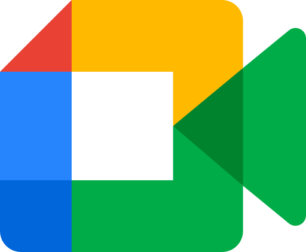
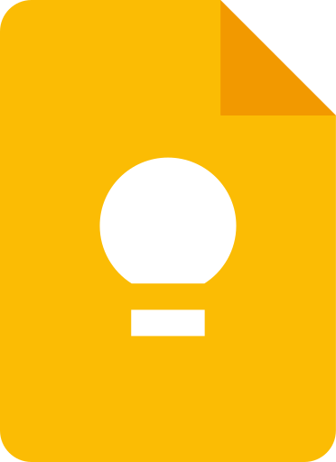
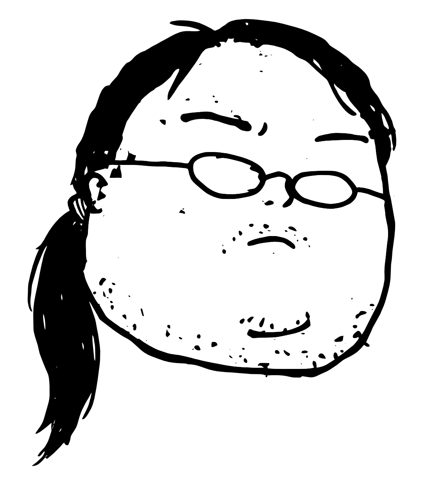
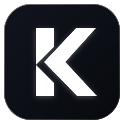
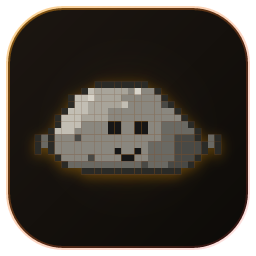
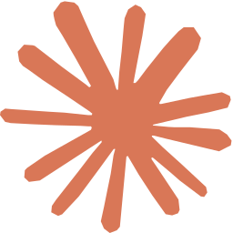

LLM Providers
Tambahkan AI provider Anda dan kelola urutan prioritas model untuk percakapan baru
Quick provider templates
12 template provider siap pakai — klik USE untuk menerapkan konfigurasi otomatis
AI Connection & Key
Endpoint URL dan API Key otentikasi provider yang sedang aktif
/chat/completions
Prioritas Model AI
Urutkan prioritas model 1, 2, 3 dari atas ke bawah untuk rotasi otomatis saat mode Auto (Rotating) aktif
Parameter Generasi
Pengaturan kreativitas respon dan limit output token
AI Image Generation
Model custom untuk pembuatan gambar otomatis saat diminta
PC Bridge & Local Tools (Native Host)
Memberikan akses ke file lokal, terminal command, dan database SQLite
cd ~/browser-agent && ./install.sh
cd ~/browser-agent && ./install.sh
cd %USERPROFILE%rowser-agent ; .\install.bat
Backup & Restore Data
Cadangkan atau pulihkan database percakapan SQLite, skills SOP, custom agents, memori, dan konfigurasi pengaturan.
Database SQLite & Workspace
Mencakup 100% riwayat percakapan SQLite (`chat_history.db`), custom agents, skills SOP, memori rules, gambar AI, screenshots, & pengaturan.
Pengaturan & Prioritas Model
Cadangan ringan khusus konfigurasi API key, endpoint provider, urutan prioritas model AI, dan preferensi UI tanpa riwayat chat.
~/.browser-agent/chat_history.db)
Manajemen Multi-Agent Persona
Konfigurasi Master Agent (Supreme Orchestrator) dan sub-agent otonom dengan keahlian serta instruksi masing-masing.
Daftar Sub-Agent Pekerja (Workers & Specialists)
Sub-agent spesialis yang diperintah dan diaudit oleh Master Agent sesuai kebutuhan prompt pengguna
Katalog Kemampuan Khusus (Skills)
Daftar SOP, tata cara analisis, atau instruksi tools terstruktur yang dapat disematkan ke Agent.
Memori Permanen & Preferensi Pengguna
Aturan tetap, preferensi komunikasi, dan pengetahuan penting yang selalu diingat oleh Agent.
Persistent Memory & Autonomous Brain
Otak otonom mandiri yang terus belajar dari percakapan dan mencegah kesalahan berulang.
Tampilan & UI
Kustomisasi tema visual, liquid glass blur, animasi pergerakan, dan preferensi antarmuka pengguna
Animasi & Widget Interaktif
Estetika Visual Dark Luxury
Connected Apps & Integrasi
Pusat integrasi aplikasi eksternal, bot remote control, dan otomasi workflow
Telegram Bot
Remote Control AIKendalikan Browser Agent jarak jauh dari smartphone via Telegram Bot API dengan auto-routing model, spesialis agent, dan tangkapan layar tab.
Belum Diset
Google Workspace
Google Docs & Google SheetsOtomatisasi ekspor laporan analisis ke Google Docs dan sinkronisasi baris data/leads secara realtime ke Google Sheets via OAuth 2.0 resmi.
WhatsApp Gateway
Fonnte WebhookKirim notifikasi auto-alert leads properti, broadcast berkas KPR, dan sinkronisasi chat leads langsung ke WhatsApp CS.
Webhook & Automasi
n8n / Make / ZapierHubungkan event Browser Agent ke workflow n8n, Make.com, Zapier, atau trigger HTTP REST API eksternal secara otomatis.
Local PC Companion
Native Host RPCKomunikasi native daemon 2 arah antara ekstensi Chrome dan terminal Python / database SQLite lokal untuk persistent brain.
Konfigurasi Bot Telegram Remote
Atur kredensial token, whitelist akun Anda, dan pantau log chat Telegram secara terisolasi
Kredensial & Otorisasi
Token tersimpan secara lokal dan aman di browser Anda.
Pisahkan ID dengan tanda koma (,) untuk memberi akses ke lebih dari 1 user/akun Telegram.
Riwayat & Log Chat Telegram
Belum ada riwayat percakapan dari Bot Telegram.
Pesan yang Anda kirim dari Telegram ke bot akan tampil di sini secara real-time.
Panduan Singkat Perintah Remote Bot Telegram
Konfigurasi Google Workspace (Docs & Sheets)
Hubungkan akun Google Anda dengan aman via OAuth 2.0 untuk ekspor laporan dokumen dan sinkronisasi spreadsheet otomatis
Status Otorisasi Akun
Hubungkan akun Google Anda dengan aman via OAuth 2.0 untuk mengaktifkan seluruh ekosistem 12 Google Apps (Gmail, Drive, Docs, Sheets, Forms, Calendar, Tasks, Contacts).
Memuat Redirect URI...
Ekosistem Google Apps Terhubung


gsuite_append_doc_text
Docs
gsuite_append_sheet_row
Sheets
gsuite_update_sheet_range
Sheets
gsuite_create_doc
Docs
gsuite_create_sheet
Sheets
gmail_send_email
Gmail
gmail_search_emails
Gmail
google_forms_create_form
Forms
google_forms_get_responses
Forms
google_calendar_create_event
Calendar
google_tasks_create_task
Tasks
google_contacts_search
Contacts
gsuite_search_drive
Drive
google_web_search & news
Search
Buka Google Cloud
Kunjungi console.cloud.google.com, buat Project baru (misal: "Browser Agent Workspace").
Aktifkan 8 Google APIs
Di menu APIs & Services > Library, aktifkan: Google Sheets API, Google Docs API, Google Drive API, Gmail API, Forms API, Calendar API, Tasks API, dan People API.
OAuth Consent Screen
Pilih User Type External, isi nama app, lalu pada tab Test Users masukkan alamat email Google Anda sendiri.
OAuth Client ID & URI
Buat Credentials OAuth client ID (Web application). Masukkan Redirect URI Anda, lalu klik Hubungkan Akun Google. Selesai!
Plugin Ecosystem & Token Optimizers
Pusat integrasi plugin modular cerdas, kompresi konteks riwayat, dan efisiensi konsumsi token AI

Ponytail
Smart Context Trimmer & Token SaverMemotong dan memadatkan konteks riwayat percakapan lama, membersihkan payload raw base64 raksasa dan snapshot DOM duplikat sebelum dikirim ke LLM. Menghemat hingga 70% konsumsi token tanpa kehilangan esensi instruksi.

KV Cache Optimizer
Transformer Prompt Caching & Prefix PinningMengunci kestabilan prefix prompt (Static Prefix Pinning), memindahkan waktu dinamis ke Suffix, dan menyortir tools secara deterministik. Menghemat biaya input token hingga 90% (Cache Read) serta mempercepat respons 3x–8x.

Caveman
Telegraphic Output & Token Shrinker"Why use many token when few do trick". Memangkas basa-basi kata pengantar/penutup, mempercepat respons AI, dan menghemat hingga 60%–75% output token dengan gaya telegrafik presisi.

Claude Fable 5
Cognitive & Memory Distillation
Distilasi arsitektur kognitif Anthropic Mythos-tier: Taksonomi memori modular (/profile.md, [stated], [[wiki-links]]), Horizon Test 30 hari, dan adaptive reasoning effort.